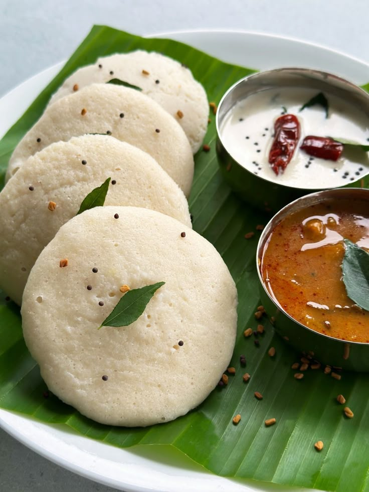

← Home
Idly
20 min + ferment

Description
Idly (also spelled Idli) is a soft, fluffy, steamed rice cake that is one of the most beloved and traditional breakfast dishes of South India. Simple yet deeply satisfying, idly has been a staple morning meal for generations across Tamil Nadu, Karnataka, Kerala, and Andhra Pradesh.
Ingredients
- Idly rice / parboiled rice
- Urad dal (skinned black lentils)
- Poha (flattened rice)
- Fenugreek seeds
- Salt
- Water
Steps
- Soak rice with fenugreek seeds for 6 hours & urad dal with poha for 4 hours.
- Grind urad dal into smooth fluffy batter, rice into slightly coarse batter.
- Mix both batters together, add salt.
- Ferment overnight or 8–10 hours in a warm place until batter doubles.
- Grease idly moulds with oil or ghee.
- Pour batter into moulds and steam for 10–12 minutes, rest 2 minutes, scoop out with a wet spoon.
- Blend coconut, green chilies & ginger with water, temper with mustard seeds, curry leaves & dry red chilies in oil...